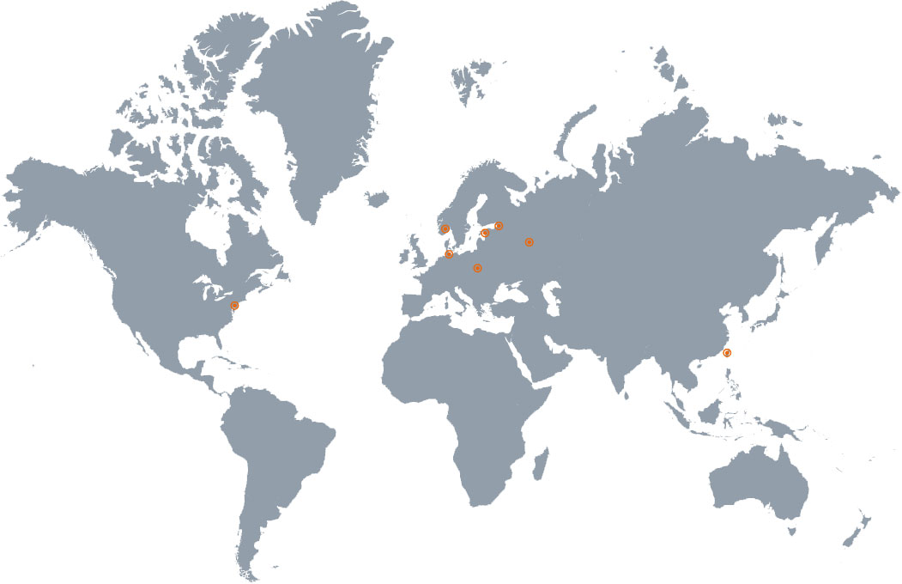

KAAST Máquinas Herramienta es su socio de producción
Proporcionar alta calidad de la máquina europea herramientas y equipo de fabricación turca precio asequible para los fabricantes en América del Norte, respaldados por un gran servicio y apoyo.
Leer más sobre KAASTContamos con los mejores clientes
Nuestra calidad, servicio y valor ha convencido a muchos clientes a confiar en su producción a nosotros. Tenemos miles de instalaciones exitosas y estaremos encantados de ofrecer a los clientes de referencia para que usted llame.
Lea los testimonios
